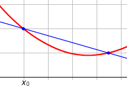
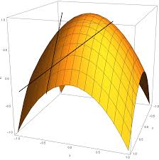

Recherche de la tangente en un point de la fonction

On considère que la pente est donnée par la tangente (plus précisément le coefficient
directeur de cette tangente) à la fonction en un point.
On note `f'(x)` ou `(df)/(dx)` ou `(δf)/(δx)` la fonction dérivée de `f(x)` (où `dx` et `df` représentent des
accroissements infinitésimaux de `x` et `f(x + dx)`).
Plusieurs variables
Ici la fonction implique plusieurs 2 variables/dimensions et sa dérivée est donc la somme des dérivées
(tangentes) dans chaque variable/dimension

Si la fonction implique plusieurs variables/dimensions `x_1, x_2, ..., x_n`, la dérivée est la somme des dérivées
dans chaque variable/dimension :
de sorte que l'on peut calculer chacune de ces dérivées partielles indépendamment (comme si les
autres variables étaient constantes).
Conception
Taux d'accroissement
Pour trouver la tangente, on la définit comme passant par 2 points de la fonction (espacés d'un petit écart `h` en
abscisse), et l'on cherchera à trouver quelle sera la pente lorsque ces points seront rapprochés au maximum (i .e.
lorsque `h` tend vers 0).
Exemples
Des exemples de fonctions dérivées sont :
Fonction `f =`
Graphique
Fonction dérivée `f'=`
Explication de la dérivée
constante
0
La pente d'une ordonnée constante (ligne horizontale) est nulle
`x`
1
`y = x` est une diagonale montant de `h` quand `x` augmente de `h`
`ax + b`
`a `
La pente de la droite est `a`, `b` est juste la position en `x = 0`, i.e. l'intersection avec l'axe des
ordonnées
`x^n`
`nx^(n-1)`
Des exemples d'utilisation des dérivées sont :
Recherche du minimum d'une fonction => recherche du point où sa dérivée est nulle (puisque cela veut dire
qu'elle est descendue puis remontée).